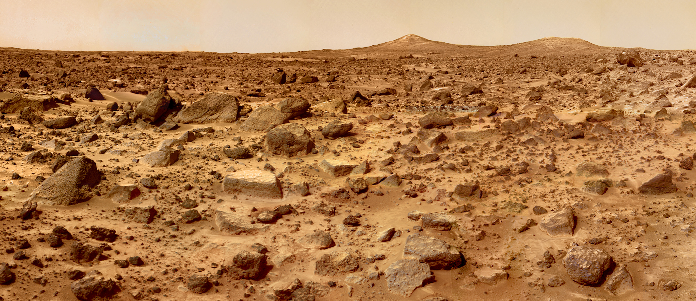

Marte este, pornind dinspre Soare, a patra planetă a Sistemului Solar, a cărei denumire provine de la Marte, zeul roman al războiului. Uneori mai este numită și „planeta roșie” datorită înfățișării sale văzută de pe Pământ. Culoarea roșiatică se explică prin prezența pe suprafața sa a oxidului de fier. Marte este o planetă telurică (de tip terestru) cu o atmosferă subțire; printre caracteristicile suprafeței se numără și craterele de impact ce amintesc de Lună, dar și vulcani, văi, deșerturi și calote glaciare polare ce amintesc de Pământ. Pe Marte se găsește cel mai înalt munte cunoscut al Sistemului Solar, Olympus Mons (21.230 m altitudine), precum și cel mai mare canion, numit Valles Marineris. În anul 2008, în trei articole publicate în revista Nature s-au adus dovezi despre un crater de impact uriaș, lung de 10.600 km și lat de 8.500 de km, care este de apoximativ de patru ori mai mare decât craterul Bazinul Polul-Sud-Aitken de pe Lună.
Până la misiunea Mariner 4 din 1965 se bănuia că pe suprafața planetei există apă lichidă. Aceste bănuieli se bazau pe variațiile suprafețelor luminate și ale celor întunecate, în special ale celor din zonele polare ale planetei, ce păreau a fi continente și mări; dungile negre erau interpretate ca fiind râuri. Odată cu această misiune s-a dovedit însă că aceste caracteristici erau doar iluzii optice; cu toate acestea Marte ar putea avea condiții de viață pentru microorganisme și apă în stare solidă, conform misiunii Phoenix Mars Lander la 31 iulie 2008. Pe baza dovezilor adunate de Curiosity (august 2012—iulie 2013) în prezent se știe că există apă potabilă pe Marte. În 2015 NASA a anunțat că a descoperit apă lichidă la polii planetei, sub forma unor râuri sărate (sărurile prezente ar fi cloruri, sulfați și perclorați)
|  |
Marte are doi sateliți mici și diformi, Phobos și Deimos, care însă ar putea fi doar doi asteroizi capturați cândva de gravitația planetei. Marte poate fi văzut de pe Pământ și cu ochiul liber. Magnitudinea aparentă atinge -2,9, luminozitate depășită doar de Soare, Venus, Lună și uneori și de Jupiter.